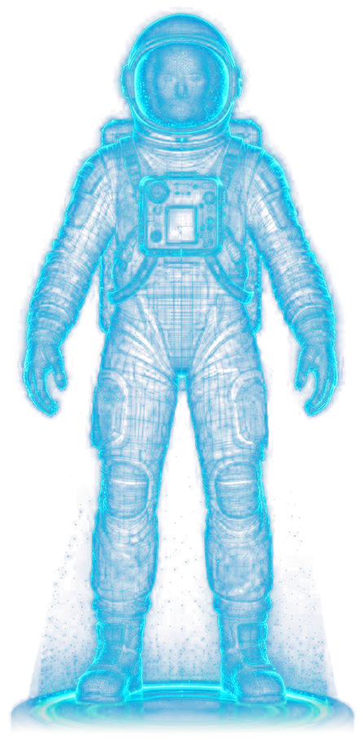
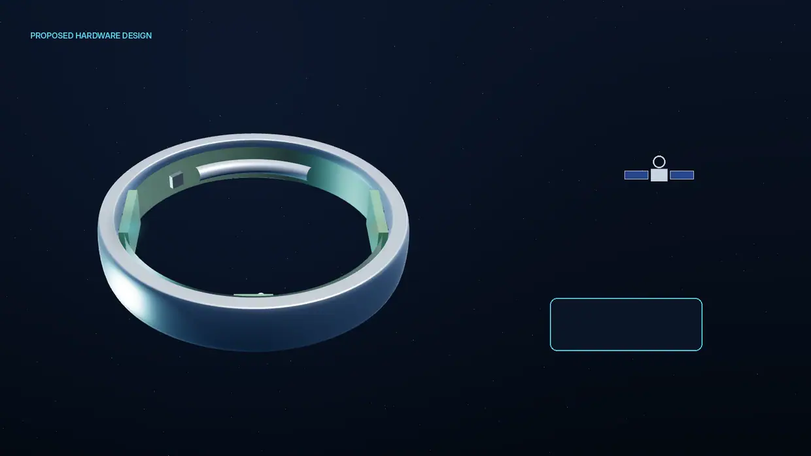
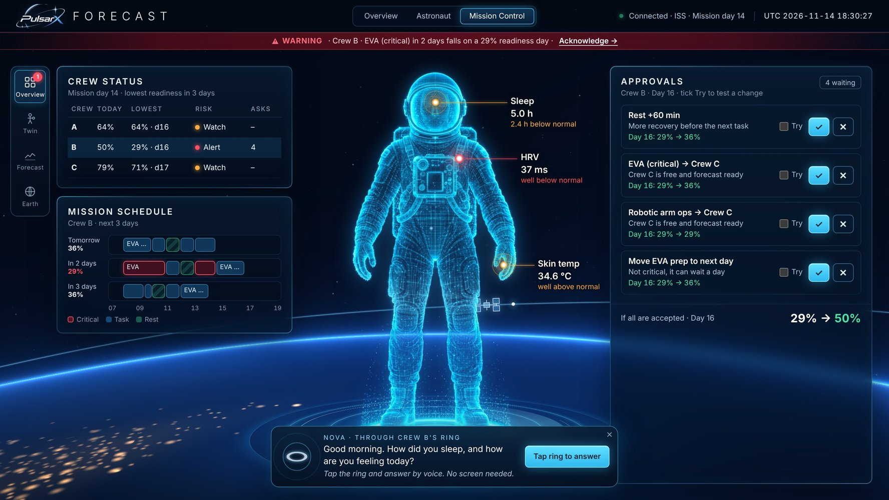

النوم
5.0 س
أقل من المعتاد بـ 2.4 س
تقلب نبض القلب HRV
37 ms
أقل بكثير من المعتاد
حرارة الجلد
34.6 °C
أعلى من المعتاد
NASA Space Apps Challenge 2026 · Madinah
FORECAST
نظام ذكي لمراقبة صحة رواد الفضاء والتنبؤ بالإرهاق
NASA Space Apps Challenge
Create Health Monitoring Software for Astronauts on Space Missions
الفريق
Ahlam Alharbi · Layan Alhaddad · Alhassan Mohammed
Omnia Jelaidan · Sarah Alharthi
The Problem · المشكلة
عندما يكون رائد الفضاء بعيدًا عن الأرض، من يراقب جاهزيته؟
تفرض المهمات الفضائية ظروفًا قد تؤثر على صحة رائد الفضاء، مثل:
- اضطراب أنماط النوم.
- تغير مستويات النشاط والتعافي.
- تراكم الإرهاق مع مرور الوقت.
وقد تؤدي هذه التغيرات إلى:
- ضعف التركيز والانتباه.
- بطء الاستجابة واتخاذ القرارات.
- زيادة احتمالية الأخطاء أثناء تنفيذ المهام.
- صعوبة التعامل مع الحالات الطارئة، مما قد يرفع المخاطر على الطاقم وسلامة المهمة.
التحدي الحقيقي: لا يكفي معرفة الحالة الصحية الحالية، بل نحتاج إلى التنبؤ بتغير مستوى الإرهاق وتأثيره المحتمل على جاهزية رائد الفضاء للمهام القادمة.
Our Solution · الحل
نقدم لكم FORECAST
نظام ذكي يراقب المؤشرات الصحية لرائد الفضاء، ويحلل تغيرها للتنبؤ بمستوى الإرهاق والجاهزية خلال الساعات والأيام القادمة.
يعتمد النظام على ثلاثة عناصر رئيسية:
Smart Ring
الخاتم الذكي
خاتم مقترح لجمع المؤشرات الحيوية وبيانات النشاط.
Digital Twin
التوأم الرقمي
تمثيل رقمي لحالة رائد الفضاء الصحية، يتحدث وفق البيانات المتاحة.
FORECAST & NOVA
التحليل والمساعد الذكي
يتنبأ النظام بمستوى الإرهاق والجاهزية، بينما يساعد NOVA في توضيح النتائج والتنبيهات والتوصيات.
How It Works · آلية العمل
من البيانات إلى التنبؤ
1
جمع البيانات Data Collection
يجمع الخاتم الذكي المؤشرات الحيوية وبيانات النشاط.
2
تحليل البيانات Data Analysis
تُحلل البيانات وتُقارن بالمستوى المعتاد لكل رائد فضاء.
3
التوأم الرقمي Digital Twin
تُحدّث صورة الحالة الصحية الرقمية وفق البيانات الجديدة.
4
التنبؤ Prediction
يحلل FORECAST احتمالية الإرهاق والتغير المتوقع في الجاهزية خلال 24 و48 و72 ساعة.
5
التوصيات NOVA
يعرض المساعد الذكي التنبيهات والتوصيات لدعم التخطيط للمهام.

تصميم مقترح: لوحتا اتصال متقابلتان · مسار أساسي وآخر احتياطي · يعمل دون اتصال
Mission Support · دعم المهمة
كيف يساعد FORECAST في حماية الطاقم؟
إذا أظهرت المؤشرات ارتفاع احتمالية الإرهاق قبل مهمة تتطلب تركيزًا عاليًا، يمكن للنظام:
- تنبيه الطاقم إلى احتمالية انخفاض الجاهزية.
- اقتراح إعادة جدولة المهمة إذا كانت طبيعتها تسمح بذلك.
- اقتراح إسناد المهمة إلى رائد فضاء آخر مؤهل، وفق قرار المسؤولين عن المهمة.
Communication & Data Continuity
استمرارية الاتصال والبيانات
- حفظ البيانات محليًا على متن المركبة عند انقطاع الاتصال.
- إرسال التحديثات إلى مركز التحكم عند عودة الاتصال.
- استخدام مسار اتصال أساسي وآخر احتياطي ضمن البنية الهندسية المقترحة.
Dashboard & Impact · لوحة النظام والأثر
رؤية أوضح للحالة الصحية والجاهزية
تعرض لوحة FORECAST المؤشرات الصحية والتغيرات التي تطرأ عليها، إلى جانب نتائج التحليل والتوقعات.

بيانات مقاسة: النوم، نبض القلب، HRV، حرارة الجلد، النشاط
نتائج تنبؤية: الجاهزية المتوقعة خلال 24 و48 و72 ساعة
القيمة التي يقدمها النظام:
- متابعة المؤشرات الصحية والنشاط.
- ملاحظة التغيرات مقارنة بالمستوى المعتاد.
- التنبؤ بمستوى الإرهاق والجاهزية.
- دعم التخطيط للمهام واتخاذ القرارات.
الأثر المتوقع:
- التنبه المبكر لمؤشرات الإرهاق.
- دعم توزيع المهام وفق الجاهزية المتوقعة.
- الحد من احتمالية تأثر أداء الطاقم بالإرهاق.
- تعزيز سلامة الطاقم والمهمة الفضائية.
Conclusion · الخاتمة
لماذا FORECAST؟
Impact
الأثر
يربط مراقبة الصحة بأداء الطاقم وسلامة المهمة.
Creativity
الابتكار
يجمع بين الخاتم الذكي والتوأم الرقمي والتنبؤ بالجاهزية.
Validity
الصحة التقنية
يعتمد على تحليل المؤشرات الصحية ومقارنتها بالمستوى المعتاد لكل رائد فضاء.
Relevance
الارتباط بالتحدي
يعالج تحدي مراقبة صحة رواد الفضاء خلال المهمات الفضائية.
Presentation Quality
جودة العرض
يعرض المشكلة والحل وآلية العمل والأثر بصورة واضحة ومترابطة.
الخطوات القادمة
تطوير النموذج، والتحقق من دقة التنبؤات، واختبار النظام في سيناريوهات تحاكي المهمات الفضائية.
شكرًا لكم